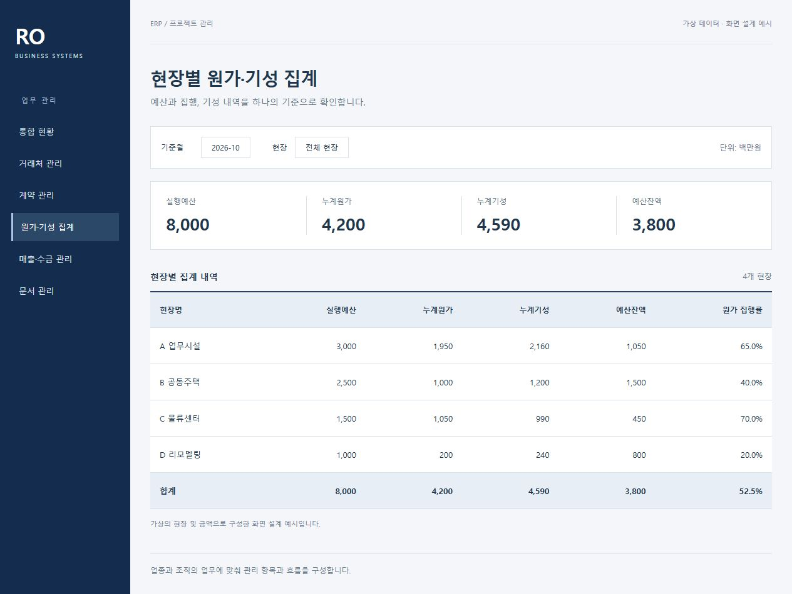
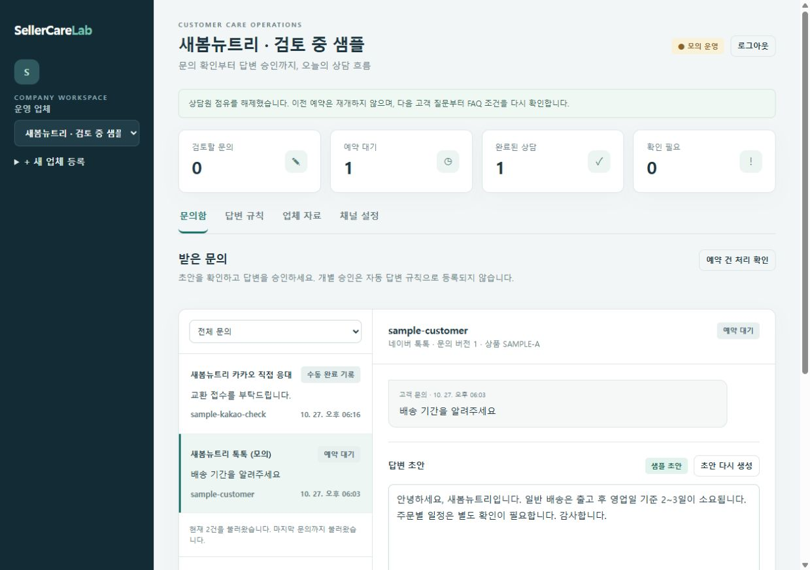
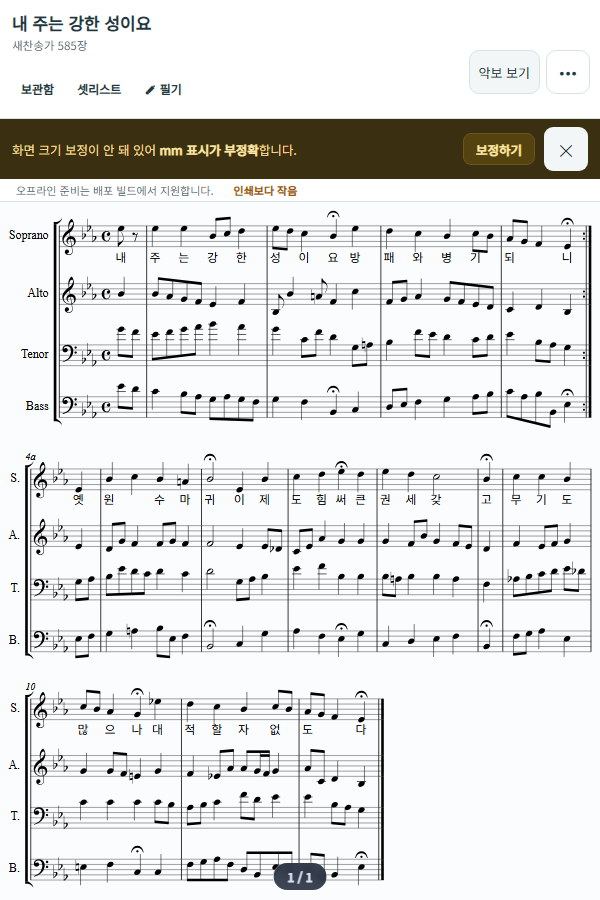

가상 데이터 · 화면 설계 예시예시 화면 보기 ↗01 / 04업종별 맞춤 개발업종은 달라도,
업종은 달라도,
업무에 맞는 하나의 시스템.
맞춤형 ERP·업무 관리 시스템
업종과 규모에 관계없이, 각 조직의 운영 방식에 맞는 ERP·업무 시스템을 개발합니다.
프로젝트 상세 보기 ↗SOFTWARE, MADE FOR YOUR WORK
업무를 이해하고, 필요한 기능을 만듭니다.
맞춤형 ERP부터 업무 자동화와 애플리케이션까지.
복잡한 업무를, 명확한 소프트웨어로.
01 / SELECTED PROJECTS
업무에 맞춘 시스템부터
일상의 문제를 푸는 서비스까지.
좌우로 넘겨 프로젝트를 살펴보세요.

가상 데이터 · 화면 설계 예시예시 화면 보기 ↗업종과 규모에 관계없이, 각 조직의 운영 방식에 맞는 ERP·업무 시스템을 개발합니다.
프로젝트 상세 보기 ↗
샘플 데이터 · 개발 화면예시 화면 보기 ↗
개발 화면태블릿 열람, 셋리스트, 필기와 팀 함께 보기를 연결합니다.
프로젝트 상세 보기 ↗CONTENT & SYSTEMS
반복 작업 사이의 흐름을 연결합니다.
문서 처리부터 AI 음성·자막 제작, 업무 도구 간 데이터 연동과 알림까지 연결합니다.
프로젝트 상세 보기 ↗프로젝트 살펴보기
02 / LET’S TALK
아이디어 단계여도 괜찮습니다.
현재의 업무와 필요한 변화를 알려주세요.